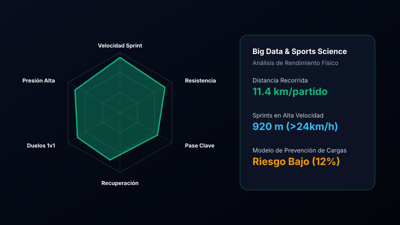

Insignia
Fundador de Futea Sports Tech, desarrollador Full Stack y analista de datos. Transformo el deporte y los negocios mediante software en tiempo real, marcadores digitales y estrategias cuantitativas de alto impacto.
Soluciones tecnológicas a medida diseñadas para potenciar competiciones, acelerar empresas y crear productos digitales robustos.
Digitalización total de competiciones de fútbol: software de marcadores interactivos (Futea Score), estadísticas en tiempo real vía WebSockets, cronómetros de campo y transmisiones multimedia profesionales.
Transformación de datos crudos en decisiones estratégicas de negocio: modelado en SQL y Python, optimización de embudos de adquisición y retención, análisis de cohortes y diseño de dashboards ejecutivos.
Construcción de aplicaciones web modernas, rápidas y escalables: arquitecturas de backend seguras, endpoints RESTful, interfaces dinámicas y despliegue continuo en la nube sin fricciones.
Soluciones en producción que respaldan mi experiencia técnica y comercial.


Pipeline de datos y tablero para análisis de embudos de conversión, retención por cohortes y optimización de CAC/LTV en campañas de crecimiento.

Modelo estadístico para el análisis físico de atletas: clustering de rendimiento, mapas de calor, sprints a alta velocidad y prevención de fatiga.
Desarrollo de software para el fútbol competitivo y formativo. Creador de Futea Score (marcadores y estadísticas en vivo vía WebSockets), digitalización de torneos y producción de transmisiones multimedia.
Modelado y extracción de datos en SQL y Python. Optimización de embudos de conversión, retención por cohortes, análisis de CAC/LTV y tableros de control de KPIs para la toma de decisiones empresariales basadas en datos.
Desempeño operativo en el sector hidrocarburos. Supervisión de procedimientos críticos, seguimiento de datos de campo, aseguramiento de calidad y cumplimiento estricto de normas de seguridad industrial (HSE), forjando disciplina y rigor metódico.
Desarrollador Full Stack y Tecnólogo Multimedia con especialización en Análisis de Datos & Big Data.
¿Tienes una idea en tecnología deportiva, desarrollo web o análisis de datos? Conéctate directamente conmigo a través de mis canales principales: